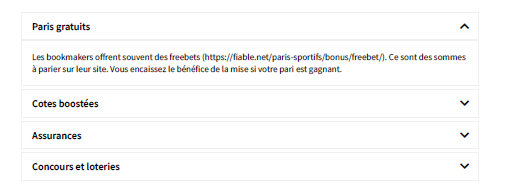

A Propos de Nous
S
AMA-bET , revelation de derniere minute suite a une etude de marcher plutot allechante face aux nombreux spectateurs
toukour nombreux sur la toile. Nous voulons permettre a cette generation grandissante de ce familiarier avec
l'evolution de la technologie afin de reduire de zero, l'handicap qu'etait le manque de virtualisation des donnees.
SUIVEZ-NOUS sur
Whatsapp
Facebook
Instagram
VIA ORANGE Senegal
Envie De Vous Lancer Dans Les Paris Sportifs ?
Suivez Nos Conseils !
On entend par pari sportif, le fait de miser de l’argent sur un événement durant une rencontre
sportive. Lorsque vous débutez dans les paris sportifs, il est important de ne pas vous précipiter.
Si c’est votre première fois dans les paris en ligne, alors ce guide vous sera d’une grande utilité. Nous
vous proposons dans cet article plusieurs conseils pratiques qui pourront vous aider à vous lancer
dans les paris sportifs.
Ce qu’il faut savoir avant de vous lancer
Face à tous les sites de paris en ligne qui existent, le débutant peut facilement se laisser submerger. Ily a tellement de sites de paris sportifs qui proposent des
cotes
et des
gains
qui ne vous laisseront pas indifférent. Le mieux dans ce cas est de prendre votre temps pour faire le meilleur
C’est la raison pour laquelle nous avons concocté ce
guide de paris sportifs
afin de vous aider à faireles meilleurs choix.
Comment parier : les 5 étapes du pari en ligne
Il était une époque, avant que le web soit web, où l’on devait découvrir les choses de la vie par soi-même, sans les avoir vu auparavant sur Internet… Tant pis pour les nostalgiques ; nous vous livronsici directement les
5 étapes à connaître
pour savoir comment parier :
- 1.
1-
Comment_parier_en_ligne_choisir_un_bon_bookmaker)
Il faut être deux pour s’amuser ! Trouver du plaisir en paris sportifs commencera par choisir unbookmaker comme partenaire de vos pronostics et mises. Parmi la
quinzaine d’opérateurs
de parissportifs légaux et actifs en France, notre site vous donne le choix ! Nos comparatifs des bookmakerssont là pour vous permettre de trouver un site qui vous convienne. Voici des critères importants pourchoisir un bookmaker qui sache aussi bien que vous comment parier en ligne !
- Légalitéet sécurité.
Tous les opérateurs que nous présentons sur notre site sont fiables, légaux,et bénéficient des licences de l’ARJEL pour exercer en France.
- Interface web.
Rien de plus énervant qu’un site lent, aux graphiques déplaisants et à lanavigation complexe. La qualité et la fluidité d’une plateforme comptent pour beaucoup
- Offres et promotions.
Les opérateurs disposent d’ores très intéressantes pour les rejoindre, etde promotions toutes l’année, notamment en paris gratuits.
- Nombre de sport et compétitions.
Généralement, les bookmakers proposent une vingtaine desports diérents, et des centaines de compétitions et matchs par jour.
- Acces mobileQue ce soit par le navigateur, ou par une application Android ou Apple à installer,l’accès aux paris sur le mobile est plus qu’une option. C’est un
must (https://fiable.net/parissportifs/
conseils/comment-parier/#Comment_jouer_au_pari_sportif_en_mode_mobile)
!
Voilà certains des critères que nous utilisons lorsque nous eectuons nos tests des bookmakers etnos classements. Il y en a de nombreux autres, et une foule de
choses utiles à connaître
pour
choisircorrectement votre bookmaker
(https://fiable.net/paris-sportifs/)
.
2-
Créer un compte avec bonus et promotions
En paris sportifs comme ailleurs, il est conseillé de se lancer dans les meilleures conditions, afin d’éviter le coup de la panne ! Les bookmakers l’on bien compris ; ils vous accueilleront en douceuravec des
offres tres sympa.Souvent, un gros pourcentage de votre premier dépôt sera oert parl’opérateur. Une autre offre populaire consiste à rembourser votre premier pari s’il est perdant. Pourceux qui ne savent pas encore trop comment parier en ligne, pas de souci donc :
c’est à qui perd gagne!
Pour créer un compte, la procédure est la même quel que soit l’opérateur, car cette étape est encadrée par la loi. La création du compte-joueur se fait tres rapidement, généralement enquelques minutes. Les opérateurs procèdent aux vérifications d’identité, notamment en envoyantpar la poste un code à activer sous 30 jours sur la plateforme. 📆 Vous pourrez parier entre temps bien entendu. Une fois inscrit(e), vous pourrez
profiter de promotions, de bonus et d’ores en parissportifs (https://fiable.net/paris-sportifs/bonus/)
très régulièrement. Voici les ores et bonnesaaires que l’on retrouve fréquemment chez la plupart des bookmakers :

2-Paris sportifs : comment ça marche une fois en ligne ?
L’heure tant attendue est enfin arrivée ! Après vous être choisi un bookmaker, bonus à la clé, puiscréé et alimenté votre compte, vous allez pouvoir
placer vos premiers paris. Mais au fait… les parissportifs : comment ca marche ?! Rassurez-vous si tout semble un peu compliqué au départ, ou quevous n’être pas trop satisfait(e) du résultat. C’est toujours mieux la deuxième fois ! ✌ C’est tout unparcours qui vous attend pour apprendre comment parier en ligne comme un pro, en toutecirconstance. Mais le plaisir est immédiat ; il suit de jouer au début sur des paris simples. Voici les 3principaux types de paris en ligne :
Pari simple.
Vous pariez sur un seul résultat à la fois. Par exemple, sur le vainqueur d’un matchde tennis ou d’une rencontre de football.
Paris multiples.
Vous pariez sur plusieurs résultats à la fois. Pour gagner votre pari multiple, ilfaudra que tous vos pronostics soient corrects. C’est plus risqué mais plus rémunérateur.
Les paris en système.
Ce sont des combinaisons de diérents paris multiples. Par exemple, unpari système basé sur trois matchs consiste à placer un pari multiple sur les matchs 1 et 2, undeuxième pari multiple sur les matchs 2 et 3, et un troisième sur les matchs 3 et 1. Les mises sontplus coûteuses, mais permettent d’espérer des gains même si tous vos pronostics ne sont pasbons
Sur quoi parier exactement ?
La nature des paris change
en fonction des disciplines
. Ainsi, en football, vous misez généralementsur une victoire, un match nul, une défaite, ou deux de ces trois résultats. En tennis, par contre, lematch nul n’existe pas. Voici quelques types de paris populaires, qui s’appliquent à de nombreuses disciplines sportives et rencontres :
Résultat
final. C’est le vainqueur d’un match ou d’une compétition.
Le
score
final. On retrouve surtout ce pari en football ou les scores sont serrés.
Pari
handicap
. On parie ici sur l’ampleur de l’écart au score sur une rencontre.
Paris
over/under
. Ces paris consistent à miser sur la hauteur du score, tous buts ou points desdeux adversaires confondus.
Paris
exotiques
. Ce sont des paris spéciaux, en fonction de chaque sport. Par exemple, on peutparier sur le nombre d’aces sur un match de tennis, ou sur un finish par KO avant un certainnombre de rounds en boxe.
Au-delà de ces mises, les bookmakers en ligne disposent de toute la puissance du web et del’informatique pour proposer un grand nombre de paris
créatifs ou exclusifs
. Tout cela est àdécouvrir au cas par cas, et pas à pas !